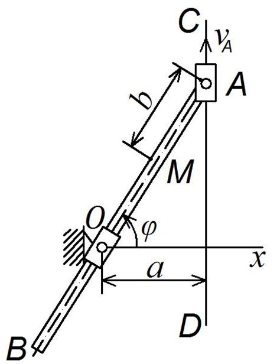

Несмотря на наличие большого количества хороших учебников по курсу теоретической механики студенты
испытывают недостаток в учебной литературе по данному вопросу. Указанные курсы, отражая
стремительное развитие науки и практики, от издания к изданию увеличивали свой объем, одновременно
учебные планы насыщались специальными дисциплинами, а объем лекционного курса по теоретической механике
сокращался, и его содержание становилось менее полным. В настоящее время разрыв между объемом и содержанием
учебной литературы с одной стороны, и лекционных курсов с другой достиг такой величины, что использование
студентами солидных учебников на базе укороченных лекций стало почти невозможно. В этих условиях наиболее
целесообразно издание и использование учебной литературы, отражающей только программные вопросы. Содержание
настоящего курса лекций соответствует полной программе курса теоретической механики для студентов очной и
заочной форм обучения инженерных специальностей. По нему студенты могут проверить, исправить и дополнить
свои лекционные записи. В процессе такой работы у студента появится основа для проработки лекционного
материала и дополнительных вопросов по более полным учебникам и научной литературе. Для изучения курса.
Раздел один
Раздел два
Раздел три
Раздел четыре
Необходимо

иметь соответствующую математическую подготовку. Во всех разделах курса, начиная со статики,
широко используется векторная алгебра. Необходимо уметь вычислять проекции векторов на координатные оси,
находить геометрически (построением векторного треугольника или многоугольника) и аналитически (по проекциям
на координатные оси) сумму векторов, вычислять скалярное и векторное произведения двух векторов и знать свойства
этих произведений, а в кинематике и динамике - дифференцировать векторы.. Надо также уметь свободно пользоваться
системой прямоугольных декартовых координат на плоскости и в пространстве, знать, что такое единичные векторы
(орты) этих осей и как выражаются составляющие вектора по координатным осям с помощью ортов. Для изучения кинематики
надо совершенно свободно уметь дифференцировать функции одного переменного, строить графики этих функций, быть.
Знакомым с понятиями о естественном трехграннике, кривизне кривой и радиусе кривизны, знать основы теории кривых
2-го порядка, изучаемой в аналитической геометрии. Для изучения динамики надо уметь находить интегралы
(неопределенные и определенные) от простейших функций, вычислять частные производные и полный дифференциал
функций нескольких переменных, а также уметь интегрировать дифференциальные уравнения 1-го порядка с разделяющимися
переменными и линейные дифференциальные
Уравнения 2-го порядка
C постоянными
коэффициентами. При изучении материала курса нужно, прежде всего, уяснить существо каждого излагаемого там вопроса.
Главное - это понять изложенное в учебнике, а не «заучить». Сначала следует прочитать весь материал темы, особенно
не задерживаясь на том, что показалось не совсем понятным; часто это становится понятным из последующего.
Затем надо вернуться к местам, вызвавшим затруднения, и внимательно разобраться в том, что было неясно.
Особое внимание при повторном чтении обратите на формулировки соответствующих определений, теорем и т. п.
(они обычно бывают набраны в учебнике курсивом или разрядкой); в точных формулировках, как правило, бывает
существенно каждое слово и очень полезно понять, почему данное положение сформулировано именно так. Однако
не следует стараться заучивать формулировки; важно понять их смысл и уметь изложить результат своими словами.
Необходимо также понять ход всех доказательств (в механике они обычно не сложные) и разобраться в их деталях.
Доказательства надо уметь воспроизводить самостоятельно, что нетрудно сделать, поняв идею доказательства; пытаться
просто их «заучивать» не следует, никакой пользы это не принесет. При изучении курса особое внимание следует
уделить приобретению навыков решения задач. Для этого, изучив материал данной темы, надо сначала обязательно
разобраться в решениях соответствующих задач, которые приводятся в курсе лекций, обратив особое внимание.